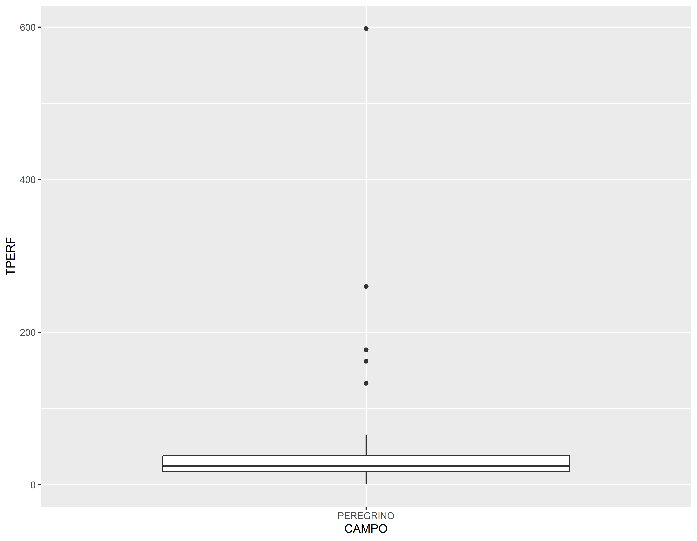
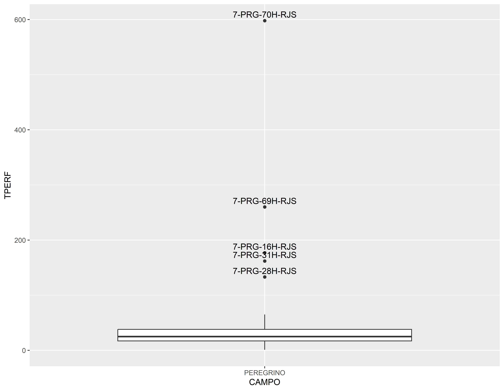
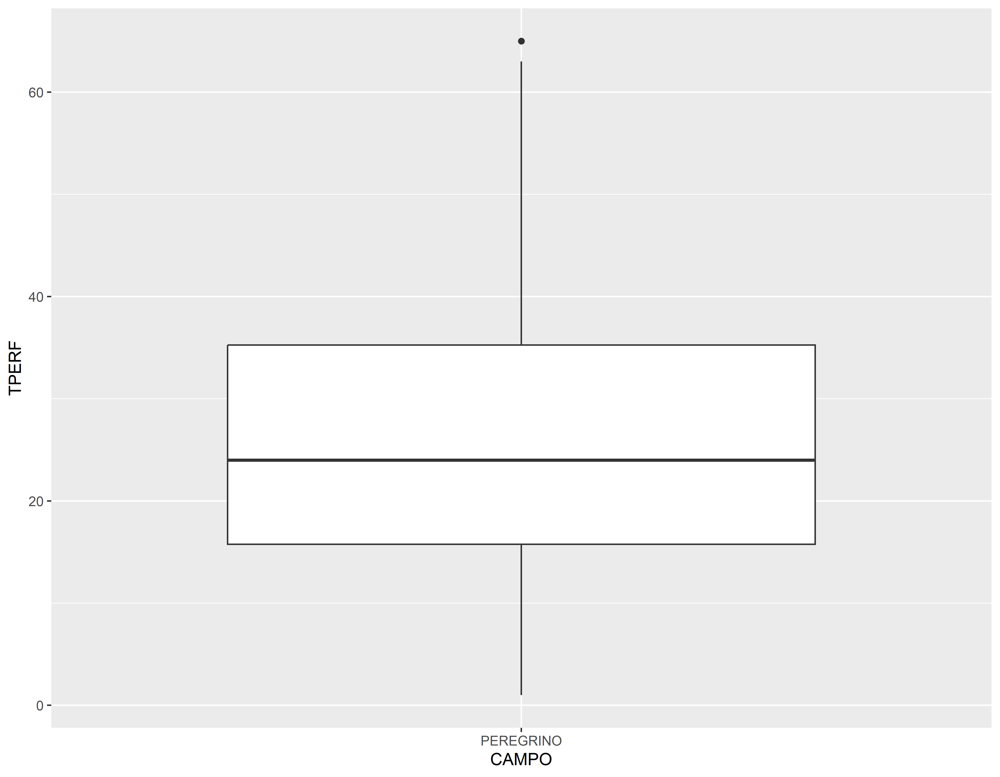
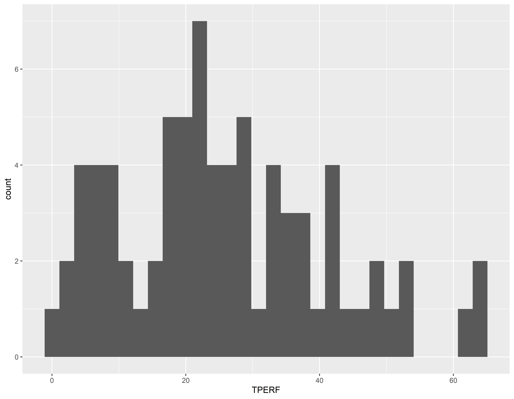
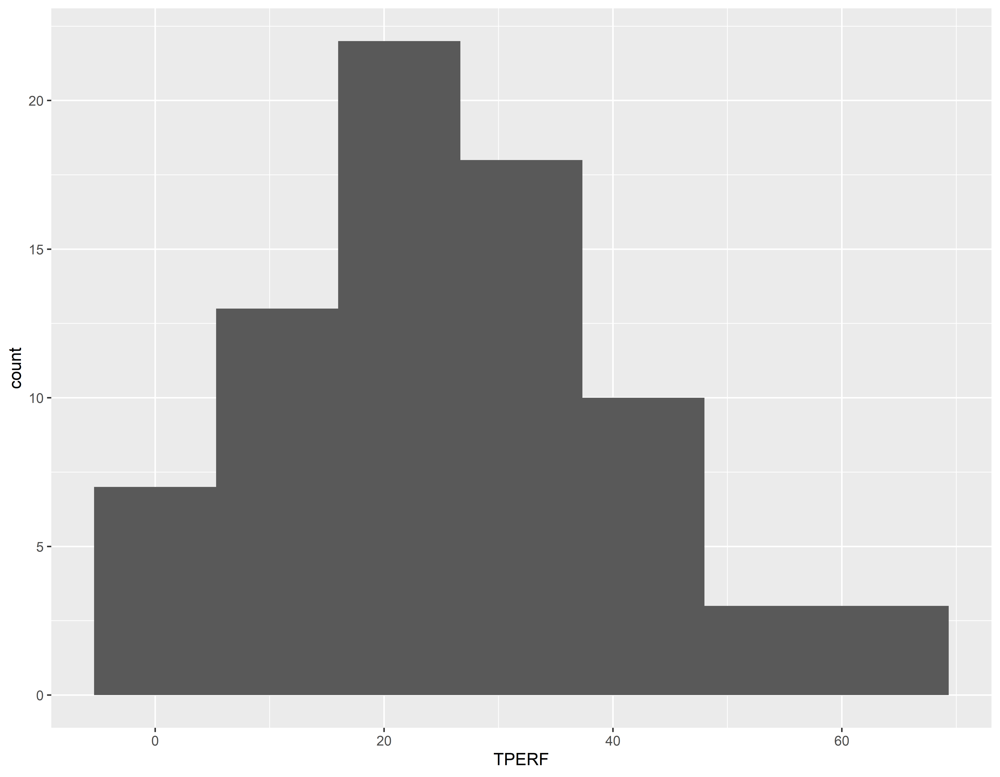
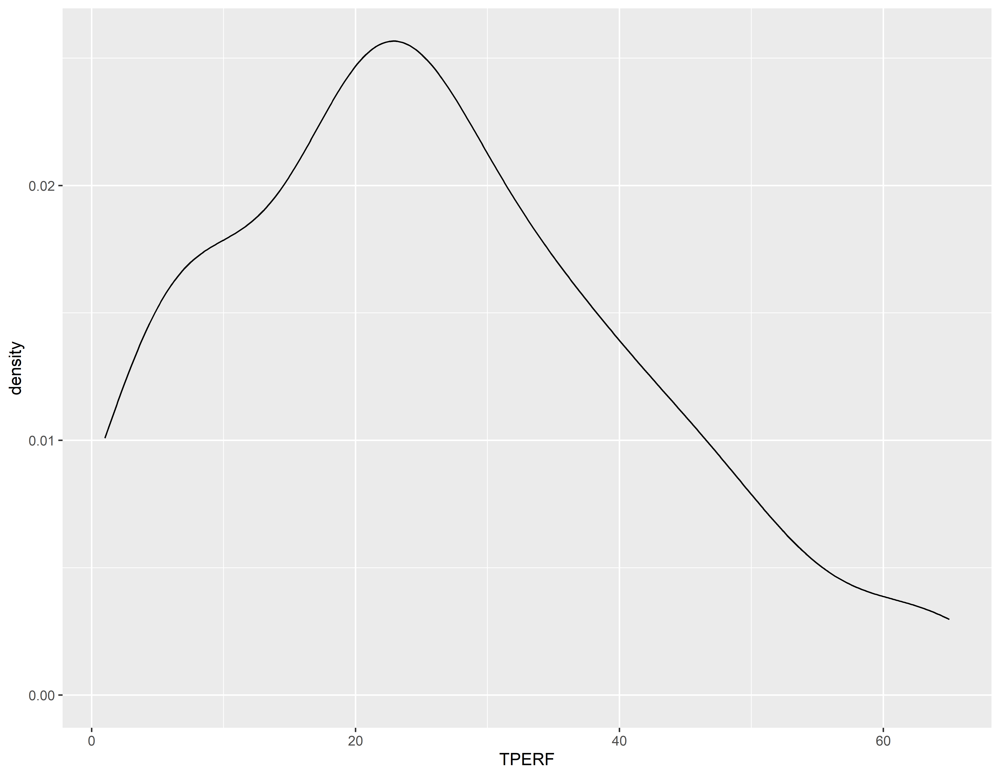
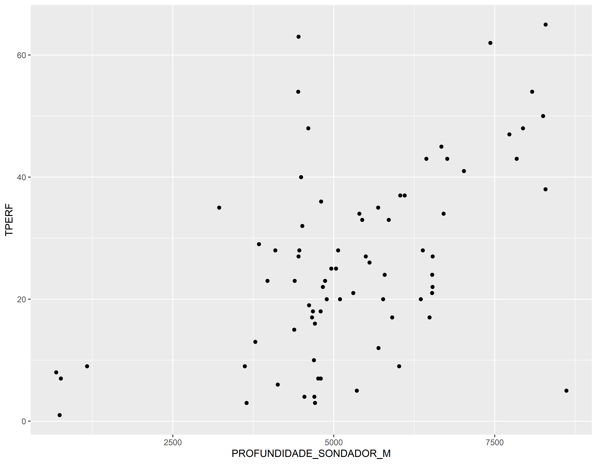
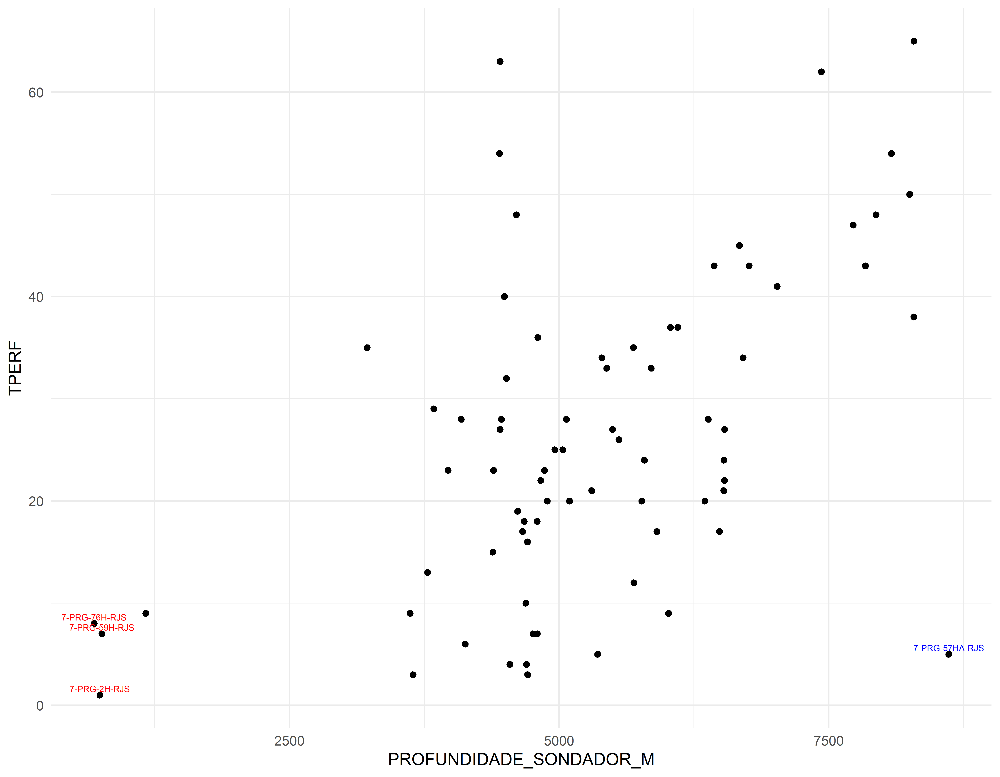

Explorando dados
Lendo dados de arquivos csv
Vamos inicialmente selecionar algumas colunas para podermos trabalhar com os dados.
As colunas que vamos trabalhar são:
- POCO
- OPERADOR
- ESTADO
- BACIA
- CAMPO
- TERRA_MAR
- CATEGORIA
- SITUACAO
- INICIO
- TERMINO
- PROFUNDIDADE_SONDADOR_M
Para selecionar colunas usamos a função select
## Vamos selecionar as colunas listadas acima
pocos_01 <- poco_filtrado %>% select(POCO,OPERADOR,ESTADO,BACIA, CAMPO,TERRA_MAR,CATEGORIA,SITUACAO, INICIO, TERMINO, PROFUNDIDADE_SONDADOR_M)
head(pocos_01)#> POCO OPERADOR ESTADO BACIA CAMPO TERRA_MAR
#> 1 7-PRG-59H-RJS Equinor Brasil RJ Campos PEREGRINO M
#> 2 7-GVR-26D-MA Eneva MA Parnaíba GAVIÃO REAL T
#> 3 6-BRSA-1349-RJS Petrobras RJ Campos MARLIM SUL M
#> 4 7-CP-1505D-SE Carmo SE Sergipe CARMÓPOLIS T
#> 5 7-GVP-6-MA Eneva MA Parnaíba GAVIÃO PRETO T
#> 6 7-TIE-1D-BA SPE Tiêta BA Recôncavo TIÊ T
#> CATEGORIA SITUACAO INICIO
#> 1 Desenvolvimento ABANDONADO PERMANENTEMENTE 24/04/2017 00:00
#> 2 Desenvolvimento ARRASADO 21/06/2017 00:00
#> 3 Jazida Mais Profunda PRODUZINDO 28/05/2017 00:00
#> 4 Desenvolvimento PRODUZINDO 24/05/2019 00:00
#> 5 Desenvolvimento FECHADO 04/02/2019 00:00
#> 6 Desenvolvimento PRODUZINDO 18/02/2019 00:00
#> TERMINO PROFUNDIDADE_SONDADOR_M
#> 1 01/05/2017 00:00 760.00
#> 2 05/07/2017 00:00 2210.00
#> 3 16/07/2017 00:00 4600.00
#> 4 04/06/2019 00:00 935.00
#> 5 10/02/2019 00:00 1430.00
#> 6 10/04/2019 00:00 2614.42summary(pocos_01)#> POCO OPERADOR ESTADO BACIA
#> Length:30566 Length:30566 Length:30566 Length:30566
#> Class :character Class :character Class :character Class :character
#> Mode :character Mode :character Mode :character Mode :character
#>
#>
#>
#>
#> CAMPO TERRA_MAR CATEGORIA SITUACAO
#> Length:30566 Length:30566 Length:30566 Length:30566
#> Class :character Class :character Class :character Class :character
#> Mode :character Mode :character Mode :character Mode :character
#>
#>
#>
#>
#> INICIO TERMINO PROFUNDIDADE_SONDADOR_M
#> Length:30566 Length:30566 Min. : 0
#> Class :character Class :character 1st Qu.: 485
#> Mode :character Mode :character Median :1000
#> Mean :1506
#> 3rd Qu.:2239
#> Max. :8613
#> NA's :1004Outra sumarização
library(summarytools)
dfSummary(pocos_01) |> stview(method = "render")Data Frame Summary
pocos_01
Dimensions: 30566 x 11Duplicates: 0
| No | Variable | Stats / Values | Freqs (% of Valid) | Graph | Valid | Missing | |||||||||||||||||||||||||||||||||||||||||||||||||||||||
|---|---|---|---|---|---|---|---|---|---|---|---|---|---|---|---|---|---|---|---|---|---|---|---|---|---|---|---|---|---|---|---|---|---|---|---|---|---|---|---|---|---|---|---|---|---|---|---|---|---|---|---|---|---|---|---|---|---|---|---|---|---|
| 1 | POCO [character] |
|
|
 |
30566 (100.0%) | 0 (0.0%) | |||||||||||||||||||||||||||||||||||||||||||||||||||||||
| 2 | OPERADOR [character] |
|
|
 |
27640 (90.4%) | 2926 (9.6%) | |||||||||||||||||||||||||||||||||||||||||||||||||||||||
| 3 | ESTADO [character] |
|
|
 |
30566 (100.0%) | 0 (0.0%) | |||||||||||||||||||||||||||||||||||||||||||||||||||||||
| 4 | BACIA [character] |
|
|
 |
30566 (100.0%) | 0 (0.0%) | |||||||||||||||||||||||||||||||||||||||||||||||||||||||
| 5 | CAMPO [character] |
|
|
 |
26459 (86.6%) | 4107 (13.4%) | |||||||||||||||||||||||||||||||||||||||||||||||||||||||
| 6 | TERRA_MAR [character] |
|
|
 |
30566 (100.0%) | 0 (0.0%) | |||||||||||||||||||||||||||||||||||||||||||||||||||||||
| 7 | CATEGORIA [character] |
|
|
 |
30566 (100.0%) | 0 (0.0%) | |||||||||||||||||||||||||||||||||||||||||||||||||||||||
| 8 | SITUACAO [character] |
|
|
 |
30458 (99.6%) | 108 (0.4%) | |||||||||||||||||||||||||||||||||||||||||||||||||||||||
| 9 | INICIO [character] |
|
|
|
30566 (100.0%) | 0 (0.0%) | |||||||||||||||||||||||||||||||||||||||||||||||||||||||
| 10 | TERMINO [character] |
|
|
|
28706 (93.9%) | 1860 (6.1%) | |||||||||||||||||||||||||||||||||||||||||||||||||||||||
| 11 | PROFUNDIDADE_SONDADOR_M [numeric] |
|
6787 distinct values |  |
29562 (96.7%) | 1004 (3.3%) |
Generated by summarytools 1.1.4 (R version 4.5.0)
2025-06-27
Manipulação de dados
Vamos eliminar as linhas de dados que apresenta dados ausentes “NA” nas colunas TERMINO e PROFUNDIDADE_SONDADOR_M.
#> [1] 10005#> [1] 0#> [1] 1860#> [1] 1004pocos_01 <- pocos_01 %>% drop_na(any_of(c("TERMINO",
"PROFUNDIDADE_SONDADOR_M")))
# melhorando a visualização dos dados
knitr::kable(
head(pocos_01, 10), booktabs = TRUE,
caption = 'Uma tabela mais elegante com as 10 primeras linhas de pocos_01.')| POCO | OPERADOR | ESTADO | BACIA | CAMPO | TERRA_MAR | CATEGORIA | SITUACAO | INICIO | TERMINO | PROFUNDIDADE_SONDADOR_M |
|---|---|---|---|---|---|---|---|---|---|---|
| 7-PRG-59H-RJS | Equinor Brasil | RJ | Campos | PEREGRINO | M | Desenvolvimento | ABANDONADO PERMANENTEMENTE | 24/04/2017 00:00 | 01/05/2017 00:00 | 760.00 |
| 7-GVR-26D-MA | Eneva | MA | Parnaíba | GAVIÃO REAL | T | Desenvolvimento | ARRASADO | 21/06/2017 00:00 | 05/07/2017 00:00 | 2210.00 |
| 6-BRSA-1349-RJS | Petrobras | RJ | Campos | MARLIM SUL | M | Jazida Mais Profunda | PRODUZINDO | 28/05/2017 00:00 | 16/07/2017 00:00 | 4600.00 |
| 7-CP-1505D-SE | Carmo | SE | Sergipe | CARMÓPOLIS | T | Desenvolvimento | PRODUZINDO | 24/05/2019 00:00 | 04/06/2019 00:00 | 935.00 |
| 7-GVP-6-MA | Eneva | MA | Parnaíba | GAVIÃO PRETO | T | Desenvolvimento | FECHADO | 04/02/2019 00:00 | 10/02/2019 00:00 | 1430.00 |
| 7-TIE-1D-BA | SPE Tiêta | BA | Recôncavo | TIÊ | T | Desenvolvimento | PRODUZINDO | 18/02/2019 00:00 | 10/04/2019 00:00 | 2614.42 |
| 7-CP-1846D-SE | Carmo | SE | Sergipe | CARMÓPOLIS | T | Desenvolvimento | ABANDONADO TEMPORARIAMENTE COM MONITORAMENTO | 31/07/2019 00:00 | 10/08/2019 00:00 | 896.00 |
| 7-CP-1828D-SE | Carmo | SE | Sergipe | CARMÓPOLIS | T | Desenvolvimento | PRODUZINDO | 06/06/2019 00:00 | 19/06/2019 00:00 | 900.00 |
| 7-CP-1827D-SE | Carmo | SE | Sergipe | CARMÓPOLIS | T | Desenvolvimento | PRODUZINDO | 04/07/2019 00:00 | 29/07/2019 00:00 | 920.00 |
| 7-CP-1638D-SE | Carmo | SE | Sergipe | CARMÓPOLIS | T | Desenvolvimento | PRODUZINDO | 16/04/2019 00:00 | 08/05/2019 00:00 | 954.00 |
#> [1] 6096Corrigindo tipo de dados
As colunas INICIO e TERMINO são datas, mas foram lidas como caracter, vamos corrigir isto!
Para trabalhar com datas vamos usar o pacote lubridate
library(lubridate)
pocos_01$INICIO <- dmy_hm(pocos_01$INICIO, locale = Sys.getlocale("LC_TIME"))
pocos_01$TERMINO <- dmy_hm(pocos_01$TERMINO, locale = Sys.getlocale("LC_TIME"))
str(pocos_01)#> 'data.frame': 27793 obs. of 11 variables:
#> $ POCO : chr "7-PRG-59H-RJS" "7-GVR-26D-MA" "6-BRSA-1349-RJS" "7-CP-1505D-SE" ...
#> $ OPERADOR : chr "Equinor Brasil" "Eneva" "Petrobras" "Carmo" ...
#> $ ESTADO : chr "RJ" "MA" "RJ" "SE" ...
#> $ BACIA : chr "Campos" "Parnaíba" "Campos" "Sergipe" ...
#> $ CAMPO : chr "PEREGRINO" "GAVIÃO REAL" "MARLIM SUL" "CARMÓPOLIS" ...
#> $ TERRA_MAR : chr "M" "T" "M" "T" ...
#> $ CATEGORIA : chr "Desenvolvimento" "Desenvolvimento" "Jazida Mais Profunda" "Desenvolvimento" ...
#> $ SITUACAO : chr "ABANDONADO PERMANENTEMENTE" "ARRASADO" "PRODUZINDO" "PRODUZINDO" ...
#> $ INICIO : POSIXct, format: "2017-04-24" "2017-06-21" ...
#> $ TERMINO : POSIXct, format: "2017-05-01" "2017-07-05" ...
#> $ PROFUNDIDADE_SONDADOR_M: num 760 2210 4600 935 1430 ...Filtrando dados
Vamos analisar os poços de uma detreminada região, para isto podemos fltrar os poços de um bloco. Vamos filtrar somente os poços do CAMPO PEREGRINO usando a função filter.
#> POCO OPERADOR ESTADO BACIA
#> Length:108 Length:108 Length:108 Length:108
#> Class :character Class :character Class :character Class :character
#> Mode :character Mode :character Mode :character Mode :character
#>
#>
#>
#> CAMPO TERRA_MAR CATEGORIA SITUACAO
#> Length:108 Length:108 Length:108 Length:108
#> Class :character Class :character Class :character Class :character
#> Mode :character Mode :character Mode :character Mode :character
#>
#>
#>
#> INICIO TERMINO
#> Min. :1994-07-07 00:00:00 Min. :1994-08-17 00:00:00
#> 1st Qu.:2012-02-06 06:00:00 1st Qu.:2012-03-30 00:00:00
#> Median :2014-02-08 00:00:00 Median :2014-04-05 12:00:00
#> Mean :2014-12-06 00:13:20 Mean :2015-01-09 08:00:00
#> 3rd Qu.:2017-06-25 12:00:00 3rd Qu.:2017-06-14 06:00:00
#> Max. :2023-05-19 00:00:00 Max. :2023-06-15 00:00:00
#> PROFUNDIDADE_SONDADOR_M
#> Min. : 269
#> 1st Qu.:4433
#> Median :4924
#> Mean :5070
#> 3rd Qu.:6138
#> Max. :8613knitr::kable(
head(pocos_02, 10), booktabs = TRUE,
caption = 'Uma tabela mais elegante com as 10 primeras linhas de pocos_02.')| POCO | OPERADOR | ESTADO | BACIA | CAMPO | TERRA_MAR | CATEGORIA | SITUACAO | INICIO | TERMINO | PROFUNDIDADE_SONDADOR_M |
|---|---|---|---|---|---|---|---|---|---|---|
| 7-PRG-59H-RJS | Equinor Brasil | RJ | Campos | PEREGRINO | M | Desenvolvimento | ABANDONADO PERMANENTEMENTE | 2017-04-24 | 2017-05-01 | 760.0 |
| 7-PRG-66HP-RJS | Equinor Brasil | RJ | Campos | PEREGRINO | M | Desenvolvimento | PRODUZINDO | 2019-02-11 | 2019-03-07 | 6529.0 |
| 7-PRG-83H-RJS | Equinor Brasil | RJ | Campos | PEREGRINO | M | Desenvolvimento | PRODUZINDO | 2023-03-18 | 2023-04-20 | 5854.0 |
| 7-PRG-8HPA-RJS | Equinor Brasil | RJ | Campos | PEREGRINO | M | Desenvolvimento | ABANDONADO PERMANENTEMENTE | 2011-11-07 | 2011-12-02 | 4960.0 |
| 7-PRG-7H-RJS | Equinor Brasil | RJ | Campos | PEREGRINO | M | Desenvolvimento | FECHADO | 2011-05-14 | 2011-06-15 | 4510.0 |
| 7-PRG-58HA-RJS | Equinor Brasil | RJ | Campos | PEREGRINO | M | Desenvolvimento | ABANDONADO PERMANENTEMENTE | 2017-05-26 | 2017-06-04 | 6015.0 |
| 7-PRG-2HA-RJS | Equinor Brasil | RJ | Campos | PEREGRINO | M | Desenvolvimento | ABANDONADO PERMANENTEMENTE | 2010-11-17 | 2010-12-10 | 3969.8 |
| 7-PRG-59HA-RJS | Equinor Brasil | RJ | Campos | PEREGRINO | M | Desenvolvimento | ABANDONADO PERMANENTEMENTE | 2017-07-15 | 2017-07-15 | 269.0 |
| 7-PRG-67H-RJS | Equinor Brasil | RJ | Campos | PEREGRINO | M | Desenvolvimento | FECHADO | 2019-05-09 | 2019-06-06 | 4465.0 |
| 7-PRG-14H-RJS | Equinor Brasil | RJ | Campos | PEREGRINO | M | Desenvolvimento | ABANDONADO PERMANENTEMENTE | 2012-01-26 | 2012-02-04 | 1167.0 |
Avaliando os dados
Os poços possuem diversas categorias, vamos ver que categorias existem nestes poços campo de Peregrino.
unique(pocos_02$CATEGORIA)#> [1] "Desenvolvimento" "Injeção" "Extensão" "Especial"
#> [5] "Pioneiro"#> # A tibble: 5 × 2
#> CATEGORIA total
#> <chr> <int>
#> 1 Desenvolvimento 84
#> 2 Especial 3
#> 3 Extensão 7
#> 4 Injeção 13
#> 5 Pioneiro 1Filtrando poços de desenvolvimento
#> POCO OPERADOR ESTADO BACIA
#> Length:84 Length:84 Length:84 Length:84
#> Class :character Class :character Class :character Class :character
#> Mode :character Mode :character Mode :character Mode :character
#>
#>
#>
#> CAMPO TERRA_MAR CATEGORIA SITUACAO
#> Length:84 Length:84 Length:84 Length:84
#> Class :character Class :character Class :character Class :character
#> Mode :character Mode :character Mode :character Mode :character
#>
#>
#>
#> INICIO TERMINO
#> Min. :2010-11-10 00:00:00 Min. :2010-11-11 00:00:00
#> 1st Qu.:2012-04-27 06:00:00 1st Qu.:2012-06-08 00:00:00
#> Median :2014-11-20 00:00:00 Median :2014-12-05 00:00:00
#> Mean :2015-06-21 20:00:00 Mean :2015-07-26 19:25:42
#> 3rd Qu.:2017-08-06 00:00:00 3rd Qu.:2017-08-15 12:00:00
#> Max. :2023-03-18 00:00:00 Max. :2023-04-20 00:00:00
#> PROFUNDIDADE_SONDADOR_M
#> Min. : 269
#> 1st Qu.:4506
#> Median :5081
#> Mean :5291
#> 3rd Qu.:6397
#> Max. :8613knitr::kable(
head(pocos_03, 10), booktabs = TRUE,
caption = 'Uma tabela mais elegante com as 10 primeras linhas de pocos_03.')| POCO | OPERADOR | ESTADO | BACIA | CAMPO | TERRA_MAR | CATEGORIA | SITUACAO | INICIO | TERMINO | PROFUNDIDADE_SONDADOR_M |
|---|---|---|---|---|---|---|---|---|---|---|
| 7-PRG-59H-RJS | Equinor Brasil | RJ | Campos | PEREGRINO | M | Desenvolvimento | ABANDONADO PERMANENTEMENTE | 2017-04-24 | 2017-05-01 | 760.0 |
| 7-PRG-66HP-RJS | Equinor Brasil | RJ | Campos | PEREGRINO | M | Desenvolvimento | PRODUZINDO | 2019-02-11 | 2019-03-07 | 6529.0 |
| 7-PRG-83H-RJS | Equinor Brasil | RJ | Campos | PEREGRINO | M | Desenvolvimento | PRODUZINDO | 2023-03-18 | 2023-04-20 | 5854.0 |
| 7-PRG-8HPA-RJS | Equinor Brasil | RJ | Campos | PEREGRINO | M | Desenvolvimento | ABANDONADO PERMANENTEMENTE | 2011-11-07 | 2011-12-02 | 4960.0 |
| 7-PRG-7H-RJS | Equinor Brasil | RJ | Campos | PEREGRINO | M | Desenvolvimento | FECHADO | 2011-05-14 | 2011-06-15 | 4510.0 |
| 7-PRG-58HA-RJS | Equinor Brasil | RJ | Campos | PEREGRINO | M | Desenvolvimento | ABANDONADO PERMANENTEMENTE | 2017-05-26 | 2017-06-04 | 6015.0 |
| 7-PRG-2HA-RJS | Equinor Brasil | RJ | Campos | PEREGRINO | M | Desenvolvimento | ABANDONADO PERMANENTEMENTE | 2010-11-17 | 2010-12-10 | 3969.8 |
| 7-PRG-59HA-RJS | Equinor Brasil | RJ | Campos | PEREGRINO | M | Desenvolvimento | ABANDONADO PERMANENTEMENTE | 2017-07-15 | 2017-07-15 | 269.0 |
| 7-PRG-67H-RJS | Equinor Brasil | RJ | Campos | PEREGRINO | M | Desenvolvimento | FECHADO | 2019-05-09 | 2019-06-06 | 4465.0 |
| 7-PRG-14H-RJS | Equinor Brasil | RJ | Campos | PEREGRINO | M | Desenvolvimento | ABANDONADO PERMANENTEMENTE | 2012-01-26 | 2012-02-04 | 1167.0 |
Criando uma coluna com mutate
Vamos criar uma coluna que nos dará a duração da perfuração dos poços.
pocos_03$INICIO[1]#> [1] "2017-04-24 UTC"pocos_03$TERMINO[1]#> [1] "2017-05-01 UTC"pocos_03$TERMINO[1] - pocos_03$INICIO[1]#> Time difference of 7 daysdifftime(pocos_03$TERMINO[1], pocos_03$INICIO[1], units = "days")#> Time difference of 7 days#> 'difftime' num 7
#> - attr(*, "units")= chr "days"#> [1] 7#> POCO OPERADOR ESTADO BACIA
#> Length:84 Length:84 Length:84 Length:84
#> Class :character Class :character Class :character Class :character
#> Mode :character Mode :character Mode :character Mode :character
#>
#>
#>
#> CAMPO TERRA_MAR CATEGORIA SITUACAO
#> Length:84 Length:84 Length:84 Length:84
#> Class :character Class :character Class :character Class :character
#> Mode :character Mode :character Mode :character Mode :character
#>
#>
#>
#> INICIO TERMINO
#> Min. :2010-11-10 00:00:00 Min. :2010-11-11 00:00:00
#> 1st Qu.:2012-04-27 06:00:00 1st Qu.:2012-06-08 00:00:00
#> Median :2014-11-20 00:00:00 Median :2014-12-05 00:00:00
#> Mean :2015-06-21 20:00:00 Mean :2015-07-26 19:25:42
#> 3rd Qu.:2017-08-06 00:00:00 3rd Qu.:2017-08-15 12:00:00
#> Max. :2023-03-18 00:00:00 Max. :2023-04-20 00:00:00
#> PROFUNDIDADE_SONDADOR_M TPERF
#> Min. : 269 Min. :-347.00
#> 1st Qu.:4506 1st Qu.: 14.50
#> Median :5081 Median : 24.50
#> Mean :5291 Mean : 34.98
#> 3rd Qu.:6397 3rd Qu.: 37.25
#> Max. :8613 Max. : 598.00Eliminando colunas com tempos negativos
Visualizando os dados de PEREGRINO
Box-Plot
ggplot(pocos_03, aes(x=CAMPO, y=TPERF)) +
geom_boxplot()
Vamos identificar estes poços (outliers).
ggplot(pocos_03, aes(x=CAMPO, y=TPERF)) +
geom_boxplot() +
geom_text(data = pocos_03 %>% filter(TPERF > 100), aes(label=POCO), vjust=-0.5)
Veja que existem alguns tempos bem elevados que estão representados no box-plot. Eles podem ser considerados pontos afastados (outliers), que neste exemplo vamos eliminar, mas que normalmente seria necessário investigar a razão destes valores.
pocos_04 <- pocos_03 %>% filter(TPERF < 100)
ggplot(pocos_04, aes(x=CAMPO, y=TPERF)) +
geom_boxplot()
Histograma
ggplot(pocos_04, aes(x=TPERF)) +
geom_histogram()
Veja que desta forma o ggplot usa o seu padrão de 30 faixas de dados, que geralmente não é o mais adequado.
Vamos usar uma regra adequada para definição de número de faixas.
Criando um histograma usando a regra de Sturges
A regra de Sturges indica 7 faixas enquanto que o padrão do ggplot2 é 30.

Veja que agora temos um histograma mais suave.
Grafico de Densidade
Outra opção é ver a densidade dos dados, que é uma forma de suavizar o histograma.
ggplot(pocos_04, aes(x = TPERF)) +
geom_density()
Gráfico de Dispersão
ggplot(pocos_04, aes(x=PROFUNDIDADE_SONDADOR_M, y=TPERF)) +
geom_point()
cor(pocos_04$PROFUNDIDADE_SONDADOR_M, pocos_04$TPERF)#> [1] 0.5253442Podemos perceber que há uma relação entre o tempo de perfuração e a profundidade do poço.
Também é possível se perceber que ainda existem dados com comportamentos estranhos. Poços rasos com profundidade muito diferente dos demais, além disso um poço muito profundo com duração muito pequena.
Se fossemos construir um modelo certamente terímos que investigar o porque destes comportamentos.
Identificando poços
## Mostrando rótulos e reduzindo tamanho das letras
# library(ggrepel)
ggplot(pocos_04, aes(x=PROFUNDIDADE_SONDADOR_M, y=TPERF)) +
geom_point() +
geom_text(data = pocos_04 %>% filter(PROFUNDIDADE_SONDADOR_M < 1000 & TPERF < 20), aes(label=POCO), size=2, vjust=-0.5, color="red") +
geom_text(data = pocos_04 %>% filter(PROFUNDIDADE_SONDADOR_M > 7500 & TPERF < 20), aes(label=POCO), size= 2, vjust=-0.5, color="blue") +
theme_minimal()
pocos_04 %>% filter(PROFUNDIDADE_SONDADOR_M < 1000) %>% select(POCO, PROFUNDIDADE_SONDADOR_M, TPERF)#> POCO PROFUNDIDADE_SONDADOR_M TPERF
#> 1 7-PRG-59H-RJS 760 7
#> 2 7-PRG-2H-RJS 742 1
#> 3 7-PRG-76H-RJS 688 8pocos_04 %>% filter(PROFUNDIDADE_SONDADOR_M > 7500 & TPERF<20) %>% select(POCO, PROFUNDIDADE_SONDADOR_M, TPERF)#> POCO PROFUNDIDADE_SONDADOR_M TPERF
#> 1 7-PRG-57HA-RJS 8613 5Definitivamente se o objetivo for criar um modelo preditivo, estes poços devem ser investigados, pois eles não seguem o padrão dos demais.
Melhorando a descrição das colunas
names(pocos_04)#> [1] "POCO" "OPERADOR"
#> [3] "ESTADO" "BACIA"
#> [5] "CAMPO" "TERRA_MAR"
#> [7] "CATEGORIA" "SITUACAO"
#> [9] "INICIO" "TERMINO"
#> [11] "PROFUNDIDADE_SONDADOR_M" "TPERF"#> [1] "poco" "operador"
#> [3] "estado" "bacia"
#> [5] "campo" "terra_mar"
#> [7] "categoria" "situacao"
#> [9] "inicio" "termino"
#> [11] "profundidade_sondador_m" "tperf"#> [1] "POCO" "OPERADOR"
#> [3] "ESTADO" "BACIA"
#> [5] "CAMPO" "TERRA_MAR"
#> [7] "CATEGORIA" "SITUACAO"
#> [9] "INICIO" "TERMINO"
#> [11] "PROFUNDIDADE_SONDADOR_M" "TPERF"pocos_04A <- clean_names(pocos_04A)
names(pocos_04A)#> [1] "poco" "operador"
#> [3] "estado" "bacia"
#> [5] "campo" "terra_mar"
#> [7] "categoria" "situacao"
#> [9] "inicio" "termino"
#> [11] "profundidade_sondador_m" "tperf"